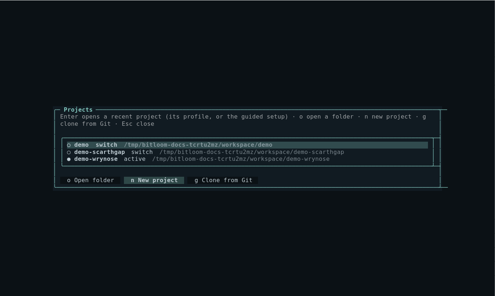
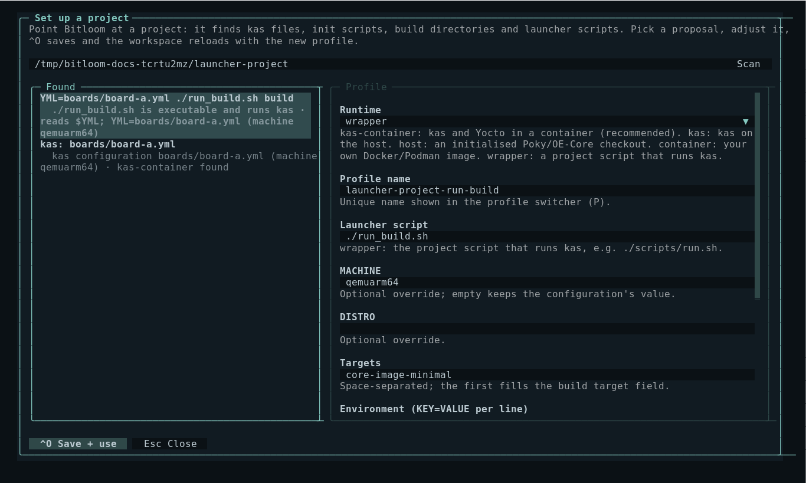
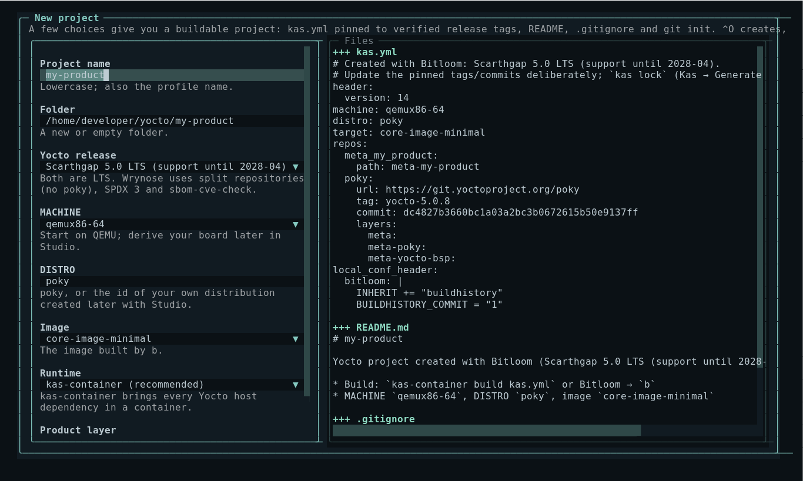
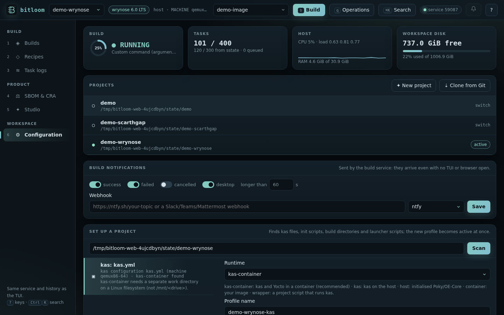

Projects and guided setup
Bitloom works with many projects at once: every project is a profile, and switching project is switching profile (P). The Projects hub opens existing folders, creates new Yocto projects and clones projects from GitHub or any Git server. The guided setup reads how a folder builds and proposes a ready-to-use profile.
Open the hub with Configuration → w, Ctrl+P → Projects, or the Projects panel in the web dashboard's Configuration section (6).
Screenshot Projects hub with recent projects

Open an existing project: guided setup#
- In the hub press
o, type the project folder and press Enter (or use Set up a project in the web Configuration section). - Bitloom scans the folder (two levels deep, read-only) and proposes profiles, each with the evidence it found:
- Launcher scripts: executable scripts that call
kas/kas-container, for example a project'srun_build.sh. Each product configuration becomes its ownwrapperproposal, titled the way you run it (YML=kas/board-a.yml ./run_build.sh build): the variable the script reads (such asYML) is set to that file, and machine and targets come from it, followingincludes. Files that other kas files include, or that name no machine, are fragments and are not offered as products. The build folder is read from the script'sKAS_WORK_DIR(defaults such as${KAS_WORK_DIR:-$HOME/build},$PWD, the script's own folder, helper variables likeTOP=$(cd $(dirname $0) && pwd)and per-product forms likebuild-${YML%.yml}or$(basename $YML .yml)are expanded); when the script computes it at run time, setKAS_WORK_DIRin the profile. - kas configurations: YAML files with a kas
header; MACHINE and target are read from the file. kas-container is proposed when available (or when kas is missing), with a separate work directory under~/bitloom-work. - Poky / OE-Core checkouts:
oe-init-build-env(also underpoky/,sources/,layers/) with existing build directories and their MACHINE/DISTRO.
- Launcher scripts: executable scripts that call
- Choose a proposal with ↑/↓; the form on the right fills in. Every field is explained and checked as you type: project root, kas files, launcher executable,
KAS_WORK_DIR(refused when missing, warned when on/mnt/<drive>under WSL), init script, profile validity. For launcher scripts it also warns when the script does not pass its arguments on (BitBake commands needshell -c) and when no build exists yet in the folder Bitloom will read. - ^O saves. The profile becomes active, and the selectors, metadata, task logs and health checks reload immediately: press
bto build. - When one launcher builds several products, ^A (web: Save all N products) saves one profile per product in one go; the first becomes active and
P(web: the profile menu) switches between them. Projects lists the folder once, naming all its profiles.
If a folder already has a profile, opening it switches to that profile instead of asking again.
On the very first start, when no profiles file exists, the guided setup opens automatically in the current directory: in the TUI (bitloom) and in the web dashboard (bitloom --web opens Configuration with the proposals for the folder it was started in).
Screenshot Guided setup proposing a launcher script and a kas configuration

Animation The web dashboard's guided setup on a launcher project with two products

Project launcher scripts#
When the folder has a script that runs kas, the proposal uses the wrapper runtime: kas operations call ./script <subcommand> and BitBake commands call ./script shell -c '<command>', with the environment variables from the profile (for example YML=boards/board.yml). For BitBake commands and runtime probes the script must forward shell -c and keep standard input open. See Teams, CI/CD and setup for the details and a minimal example script.
Create a new project#
Press n in the hub (web: New project). A few choices give a buildable project:
| Field | Meaning |
|---|---|
| Project name | Lowercase; also the profile name |
| Folder | A new or empty folder (defaults to ~/yocto/<name>) |
| Yocto release | Scarthgap 5.0 LTS (Poky repository) or Wrynose 6.0 LTS (bitbake, openembedded-core and meta-yocto) |
| MACHINE, DISTRO, image | Start on QEMU with poky; derive your board and distribution later with Studio |
| Runtime | kas-container (recommended) or kas on the host |
| Product layer | Creates meta-<name> registered in the kas file |
Bitloom writes kas.yml pinned to the release tags verified by its own real builds (yocto-5.0.8 and yocto-6.0.2, with the commits the tags point to), a README, a .gitignore, the optional layer, and runs git init. The profile becomes active; the first build downloads layers and sources. Update the pinned tags deliberately, and use Generate kas lock file to record exact revisions.
Screenshot New project form with the generated kas.yml

Clone from GitHub or Git#
Press g in the hub (web: Clone from Git), enter an https://, ssh://, git@ or file:// URL, the destination (suggested from the URL until you edit it) and an optional branch or tag. Your Git credentials and SSH agent are used as in a terminal.
The clone runs as a normal job, so you follow its progress in Builds. When it succeeds, the guided setup opens on the new folder.
Recent projects#
The hub lists recently opened, created, cloned and set-up folders (stored in <state>/projects.json) together with every profile root. Enter switches to the folder's profile, or runs the guided setup if the folder is not set up yet.
Web dashboard#
The Configuration section has the same three parts: Projects (recent list, New project with live file preview, Clone from Git), Set up a project (scan, proposals, form, live checks, Save and use), and the health checks. Saving or creating selects the new profile in the header at once; a finished clone raises a toast with Set it up.
Screenshot Projects in the web dashboard

API#
| Method and path | Purpose |
|---|---|
GET /api/projects |
Recent projects, releases, machines and images |
POST /api/projects/preview, /create |
Plan or create a new project {name, dir, release, machine, distro, target, runtime, layer, owner} |
POST /api/projects/clone |
Clone {url, dest, branch} as a job; returns the job id |
GET /api/setup/scan?dir=… |
Proposals for a folder |
POST /api/setup/check, /save |
Check or save {profile}; saving makes it active |